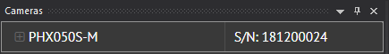
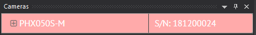
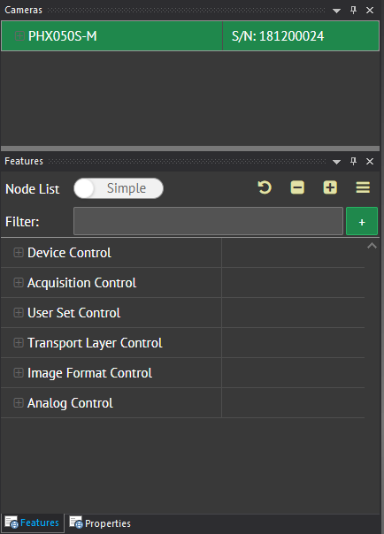
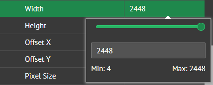
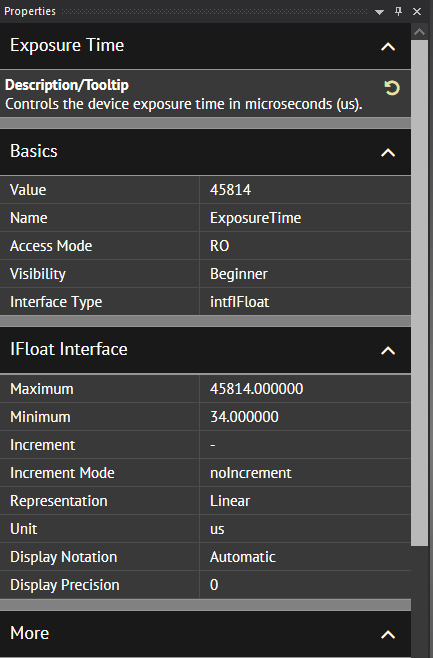
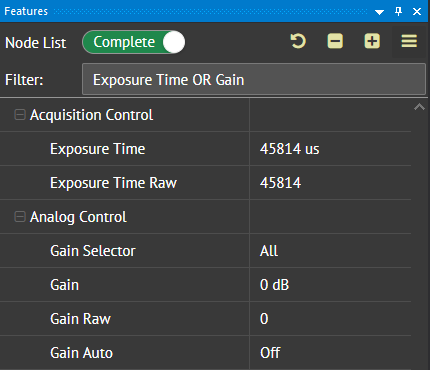
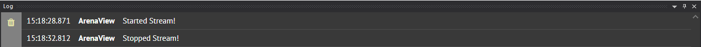

Getting Started with ArenaView in Windows¶
Controlling Your Camera in ArenaView¶
Select your camera in the Camera window pane. Double-click on the camera to connect to the camera.

Cameras that have an invalid IP address will be highlighted in light red. Double-click on the camera to force it to a valid IP address.

After selecting your camera, the Features window pane will be filled with the camera feature list which allows you to change settings on the camera.

Click on the feature name’s value to change its value. You may need to stop streaming the camera to change certain features.

You can find more information for a feature by clicking on it and looking at the Properties window pane.

ArenaView also includes the option to enable Packet Resend, which is the functionality for the software to request lost packets. More information about Packet Resend can be found at our Tech Brief here: https://thinklucid.com/tech-briefs/gigabit-ethernet-the-efficient-and-reliable-interface/#resends. If you see packet loss or torn images while streaming in ArenaView, you can enable this feature by setting TL DataStream Parameters -> Buffer Handling Control -> Packet Resend Enable to On.

| Stop the camera stream before changing the Packet Resend option. |
The ArenaView toolbar has the following buttons:
- Click to acquire a single image. This will open a new tab.
- Click to continuously acquire images. This will open a new tab.
- Click to stop acquisition and close the current tab.
{kind=link}
{kind=link}
{kind=link}
Use the Node List toggle in the Features window pane to switch between the following modes:
- shows beginner camera features
- shows all camera features
Use the Filter to filter specific camera features. Include boolean operators such as OR to filter multiple feature names:

The Log window pane displays connection updates (camera arrival or removal) and streaming information for the camera.

{kind=link}